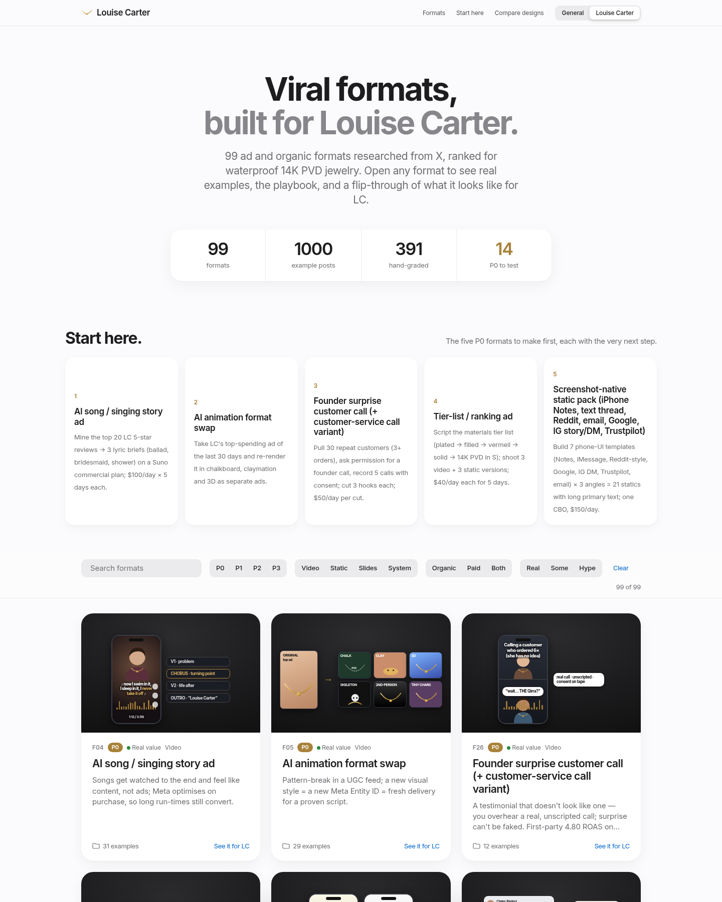
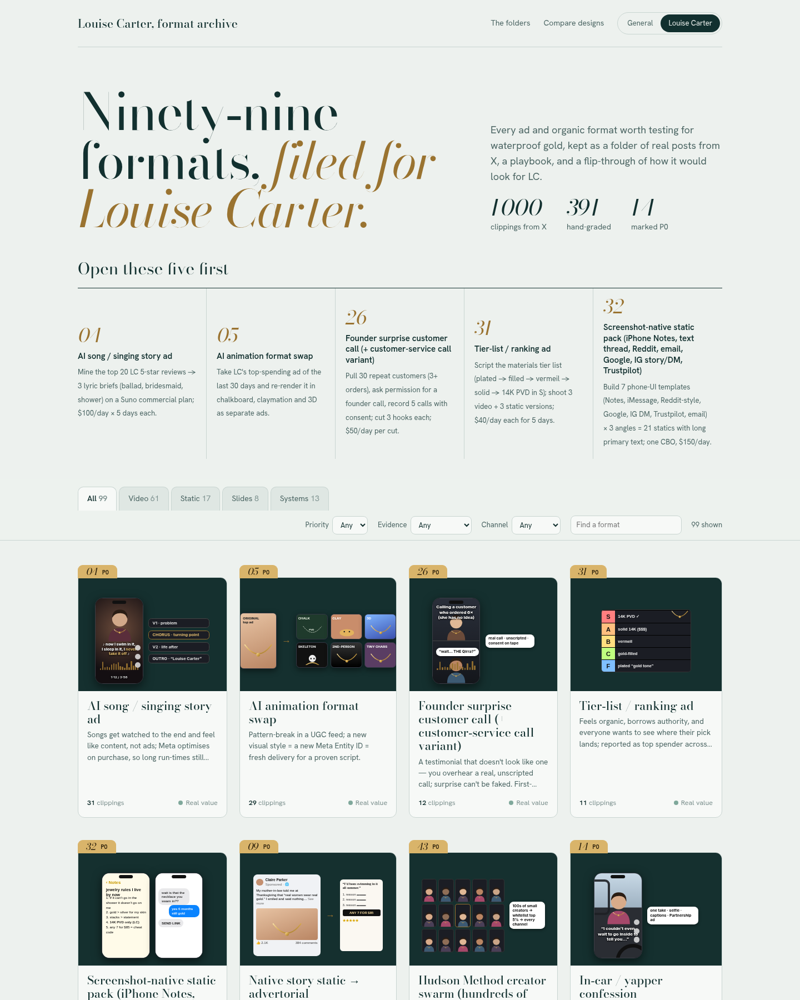

Two redesigns of the format library, each in a Louise Carter version (with the flip-through that shows how a format would look for LC) and a general version anyone can reuse.

Apple HIG polish: light, system type, segmented filters, and a bottom sheet with tabs for overview, examples, stages, files and the LC flip-through.
Louise Carter versionGeneral versionOpen a format
Frontend-design pass: an archive of file folders with Bodoni tab numbers, drawer-style filters, and a side drawer of clippings, stages, files and the LC flip-through.
Louise Carter versionGeneral versionOpen a formatThe original board is still at the main link. The reusable general board lives at /general/. Every format is a folder under formats/.